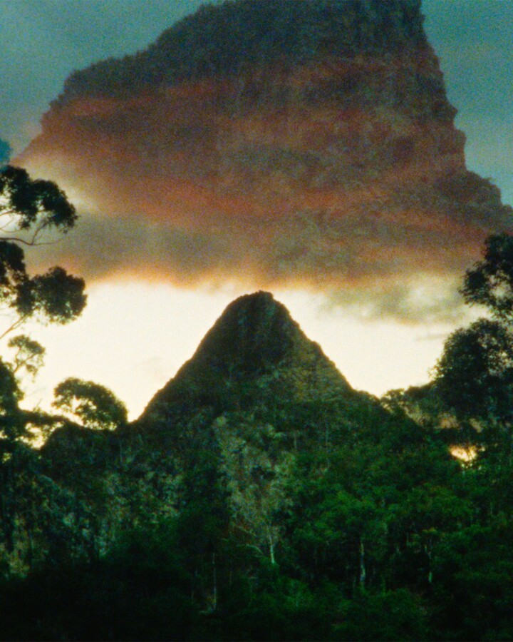

Conversations at the Edge | Volcanoes, Mountains, Forests: Malena Szlam and Jiayi Chen
Artist Malena Szlam and filmmaker Jiayi Chen present a special evening of immersive films and live performances that use analog technologies to reorient perceptions of landscape and time.
“Malena Szlam’s ALTIPLANO ranks among the most striking landscape films of recent years and, indeed, calls for a revision of how we talk about landscape in cinema.”—Dan Sullivan, Film Comment
“Jiayi Chen expands exposure and sight through her three-projector performance As a Tree Walks to Its Forest.”—Edward Frumkin, Millennium Film Journal
Followed by a conversation with Malena Szlam and Jiayi Chen. Presented with support from Chicago Film Society and University of Chicago’s Film Studies Center.
ABOUT THE ARTISTS
Malena Szlam is a Chilean artist and filmmaker based in Tiohtià:ke / Mooniyang / Montreal. Her films, installations, and photographs explore embodied perception and the material and affective dimensions of analog film processes. Attentive to the geopolitics of natural phenomena, her recent projects engage geology, earth science, and volcanology. Her work has been exhibited internationally at festivals and institutions including the Toronto International Film Festival; New Directors/New Films, New York; Valdivia International Film Festival; Jeonju International Film Festival; Cinéma du Réel, Paris; Open City Documentary Festival, London; and the International Film Festival Rotterdam. Recent group exhibitions include Energy Fields: Vibrations of the Pacific, Fulcrum Arts, Los Angeles and femmes volcans forêts torrents, Musée d’art contemporain de Montréal. Solo exhibitions include Infra—, SBC Gallery of Contemporary Art, Montreal. Her award-winning film ALTIPLANO received the Best Experimental Short Film prize at the Melbourne International Film Festival and has been called one of the most significant landscape films of the 2010s. Her films are held in the permanent collection of the Museum of Modern Art.
Jiayi Chen is an artist, filmmaker, and projectionist from Chongqing, China, currently based between Chicago and Houston. Working at the intersection of analog film, performance, and installation, her practice explores perception, translation, and environmental attunement. Through expanded-cinema and analog film processes, Chen approaches filmmaking as a durational and relational act. Her work has been exhibited and screened internationally at festivals and venues including the including the International Film Festival Rotterdam; New York Film Festival; Cineteca Madrid; Fracto Experimental Film Encounter, Berlin; MONO NO AWARE, New York; Chicago Cultural Center; Harkat Studios, Mumbai, India; Museum of Contemporary Art Chicago; and Anthology Film Archives, New York.
CONVERSATIONS AT THE EDGE